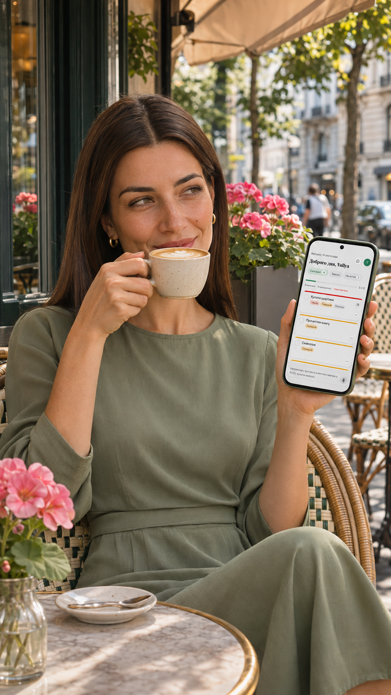

Карусель · 5 слайдів
Розкидані справи
Квитки для мами, квартальний звіт і дашборд продажів з’являються на стікерах у трьох різних місцях. Фінальні слайди збирають записки разом і показують Вулик у руці героїні.
Продиктуй робочі й особисті справи одним записом. Вулик розділить їх на задачі й запропонує пріоритети, які можна змінити.
Спробувати Вулик ↗
Вулик — голосовий планер, який перетворює одну фразу на окремі задачі. Робочі й особисті справи згадуються протягом дня. Частина лишається в нотатках, частина — на стікерах, а деякі доводиться тримати в голові. Мета кампанії — показати, як зібрати ці справи голосом і створити перший список у Вулику.
Вулик орієнтований на зайнятих україномовних людей від 25 років із завантаженим графіком і високим рівнем відповідальності. Вони ведуть власний бізнес або відповідають за робочі проєкти, поєднують це з особистими справами й знаходять час для хобі.
Робочі й особисті справи часто згадуються раптово, посеред іншого заняття. У цей момент важливо швидко зафіксувати те, що спало на думку. До пріоритетів можна повернутися пізніше.
Todoist Ramble і TickTick AI Voice Add уже розділяють голосовий запис на задачі й розпізнають дати та пріоритети. Motion допомагає розмістити задачі в календарі. Для Вулика я обрала сценарій із повсякденного життя: людина говорить українською у своєму темпі й отримує список справ, який може переглянути й скоригувати.
Я побудувала кампанію навколо моменту, коли людина раптово згадує про справу. Карусель «Розкидані справи» показує, як такі задачі накопичуються в різних місцях. Анімація «Одна фраза. Дві задачі.» демонструє, як зібрати їх голосом в одному списку.
Людина говорить так, як їй зручно. Вулик виділяє окремі задачі й за їхнім змістом пропонує пріоритети, які можна скоригувати. Обидва креативи ведуть до першого кроку — продиктувати власні справи у Вулику.
Квитки для мами, квартальний звіт і дашборд продажів з’являються на стікерах у трьох різних місцях. Фінальні слайди збирають записки разом і показують Вулик у руці героїні.
Оригінальна бджілка Вулика супроводжує голосовий запис. Дві задачі з’являються у вкладках «Сьогодні» й «Завтра» у спрощеному макеті інтерфейсу.
Спочатку перевірю, чи після перегляду люди розуміють, як створити список голосом. Для тесту рекламного вступу порівняю знайому ситуацію «Точно десь записала. Але де?» з прямою пропозицією «Додай кілька справ одним записом». Демонстрація продукту й заклик до дії будуть однаковими.
Частка показів, які привели до кліку за посиланням.
Кількість унікальних відвідувачів із кожного креативу.
Частка відвідувачів, які завершили реєстрацію.
Частка відвідувачів із кожного креативу, які зберегли хоча б одну задачу з першого голосового запису.
Результати кампанії ще не зібрано.
Карусель показує, де губляться справи. Анімація показує, що відбувається після натискання на мікрофон. Перед запуском перевірю, чи глядачі розуміють, як створити список голосом, і чи аналітика фіксує перехід та збереження першої задачі.